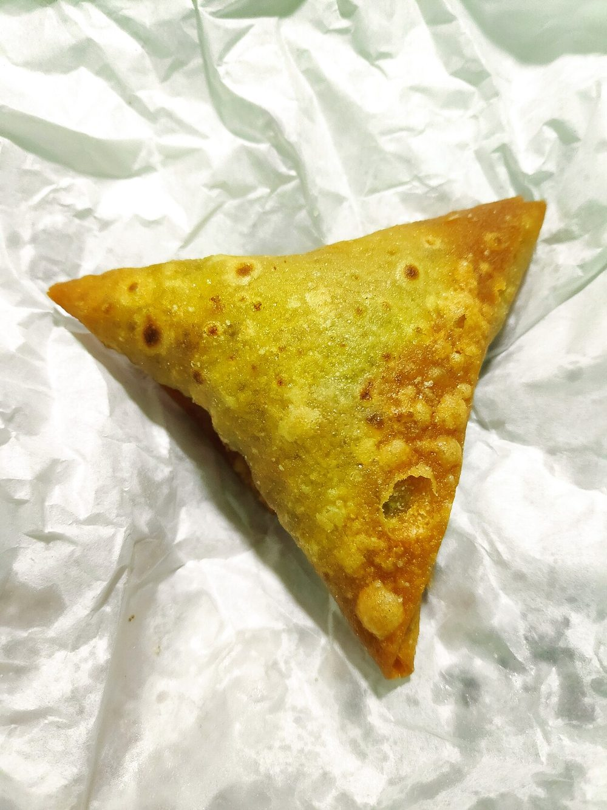

Contains: gluten
Ingredients
Quantities for 6.
- 300g Maida
- 1 tsp Ajwainthe flavour that says samosa
- 500g, boiled and roughly crushed Potatocrushed, not mashed
- 150g Peas
- 2, chopped Green Chilli
- 1 tbsp, grated Ginger
- 1 tsp Cumin Seeds
- 2 tsp, coarsely crushed Coriander Powder
- 1.5 tsp Amchur
- 1 tsp Garam Masala
- 1 tsp, crushed Fennel Seedsoptional
- a handful Coriander Leavesoptional
- 600ml Neutral Oilfor deep frying
- to taste Salt
Cookware
stovetop, kadhai
Checked against the ingredient list for ten allergens: milk, egg, fish, crustaceans, tree nuts, peanuts, sesame, mustard, soy and gluten. Brands vary, so read the label on anything new to you.
Before you start
- The pastry is short, not soft: rub plenty of oil into the flour until it holds a shape when squeezed. That is what makes it crisp rather than chewy.
- Fry low and slow. Samosas dropped into hot oil blister and go soft within minutes.
Method
- Rub 6 tbsp of the oil and the ajwain into the maida until the mixture holds together when pressed in your fist.This test matters. Too little fat and the crust will be tough.
- Add cold water sparingly to make a stiff dough. Knead only until smooth, then rest 30 minutes covered.Stiff, not soft. A soft dough gives bubbles and a wavy shell.
- For the filling, crackle cumin in 2 tbsp oil, add ginger and chilli, then the peas and a splash of water, and cook until tender.
- Add the crushed potato, coriander powder, amchur, garam masala, fennel and salt. Cook 4 minutes and cool completely.Warm filling makes the pastry damp and it splits in the oil.
- Roll a ball of dough into an oval, cut it in half, form a cone from each, fill, and seal the edge with a wet finger, pressing firmly.Any gap and the samosa drinks oil.
- Rest the shaped samosas 15 minutes uncovered so the surface dries.
- Fry at 140C, low, for 10 minutes until pale and blistering slowly, then raise to 180C for 3 minutes to colour.The low first fry sets the layers. Straight into hot oil gives a bubbled, greasy shell.
- Drain and serve with tamarind and mint chutneys.
Storage
Best within a few hours. Fried samosas keep a day and revive in a hot oven, never a microwave. Shaped uncooked samosas freeze for a month and fry from frozen.
Nutrition Good estimate
Low protein: 9 g a serving, 9% of the calories
| Per serving181 g | Per 100 g | |
|---|---|---|
| Calories | 406 kcal | 225 kcal |
| Protein | 8.8 g | 5 g |
| Carbohydrate | 59.8 g | 33 g |
| of which sugars | 3.2 g | 2 g |
| Fibre | 5.8 g | 3 g |
| Fat | 15.0 g | 8 g |
| of which saturated | 1.6 g | 1 g |
| of which unsaturated | 12.5 g | 7 g |
Ingredients given to taste count as zero, so the real figures run a little higher. Nearest database match used for amchur, garam masala. Estimated from raw ingredients using USDA FoodData Central.
More like this: Vegan Indian recipes · Vegetarian Indian recipes · Dairy-free Indian recipes · No onion no garlic recipes · Punjabi recipes
Times, yields, allergens and nutrition are guidance. Use your own judgement on doneness and on storing. More in About.